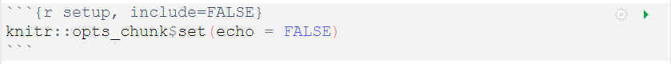
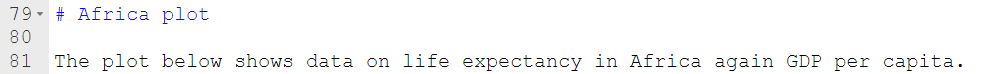

Topic 5: Guide to R Markdown
R Markdown allows us to turn the findings of our analysis in R into well presented and high quality reports in various formats. In this topic you will learn to navigate the different elements in an R Markdown file and we’ll introduce you to some of the main features which make these documents so attractive.
What is R Markdown?
R Markdown is a file format and a tool which combines both R code and Markdown, meaning you can produce documents with text and code fully integrated. We can use R Markdown to create documents which are fully reproducible and easy to share.

So far we have been working entirely with R Scripts, so why would we want to switch to using R Markdown instead?
R Markdown contains lots of “mini” R scripts, called code chunks, but in combining these with text and commentary in Markdown we can:
Communicate our analysis and conclusions more effectively to those who are not interested in the code
Collaborate more easily with other R users who are interested in the workings of the R code
Capture not just our analysis but our ideas and thoughts, just like using a notebook
I know what R is but what exactly is Markdown?
Markdown is a lightweight markup language which we can use to add formatting and styling easily to plaintext documents (e.g. **bold**, *italic*). It is one of the most popular markup languages because it was designed to be “easy-to-read, easy-to-write”.
Markdown is very powerful because it enables us to convert “plaintext” into various formats such as:
- Word
- HTML
… at the click of a button!
And then when we add in R to turn it into an R Markdown document, it becomes even more powerful still.
Dissecting our Document
There are three basic elements which make up our R Markdown document:
- the metadata in YAML
- the code chunks in R
- the text in Markdown
And when combined, these allow us to produce the outputs in PDF or HTML or Word… or many more!
Hang on, what’s YAML?
Is this another language you’ve sneaked in, I hear you say?
No need to panic, YAML is only used in a small section of our document, in the header. But yes, it is another language and Wikipedia helpfully informs us that:
“Originally YAML was said to mean Yet Another Markup Language, referencing its purpose as a markup language with the yet another construct, but it was then repurposed as YAML Ain’t Markup Language, a recursive acronym, to distinguish its purpose as data-oriented, rather than document markup.”
The YAML helps us to create meaningful metadata. This is where we can add in options for how we want our outputs to be displayed.
For example we can specify whether we want a table of contents (toc) to be displayed by including this in our YAML:
This is also where we can specify that we want our table of contents to be floating (this means it is always visible on the screen), where we can add themes, include instructions for a “code download” button to be added, and much more:
As well as editing the YAML directly we can control what appears in here by going to the settings cog at the top of the document and selecting Output Options…

Here we can also see options to add in section numbers and set the default figure size. When we change these settings we can see that the code in the YAML is automatically updated.
Be aware that not all output options are available for all formats.
Where does the R code go?
The R code is interspersed throughout our document in small sections called code chunks which look like this:
This back ticks ``` and curly braces {r} combination lets Markdown know it’s going to run some R code. Most of your R code will appear between two sets of back ticks like the example above.
Watch out for unpaired or rogue sets of back ticks as these can cause errors or strange behaviour and can sometimes be hard to spot.
We can run each individual chunk of code by clicking on the green arrow at the top-right of the code chunk. However, the usual Keyboard Shortcut of Control+Enter to run a line is still essential too. It is faster than moving your hand back from the keyboard to the mouse and navigating to this button. Furthermore, this means that if you have several lines in your code chunk, you can run each line separately which helps with fixing errors. The keyboard shortcut for running all lines in a code chunk is Control+Shift+Enter.
But what about the output? Where does it appear?
Similar to when we were working in an R Script, if we save our output as an object it isn’t displayed until we “print” it, but if we only “print” it and don’t assign our code to an object, then our output is only displayed.
When we run code in R Markdown, instead of our output appearing in the console or plotting tab, it appears directly below the code chunk. Our saved objects still appear in the Environment tab.
R Markdown behaviour is slightly more complicated however, because as well as having the option to run our the code in the ways shown, we can also “knit” our document to see what our finished report will look like. When this happens, the “knitting” process essentially creates a new self-contained environment, separate to the Environment tab we see in RStudio, so any objects assigned will not appear in our Environment tab unless we run them separately. More on this shortly.
To add an R chunk, rather than manually entering back ticks and curly brackets, the easiest way is simply to click on the Insert shortcut at the top of your document and select R.
To run an R chunk, we’ve already mentioned the green arrow within each code chunk. There are other ways to run your code and these can be found in the Run shortcut at the top of your document.
How do I write in Markdown?
Markdown is very simple to learn and you may even have been using it without knowing if you have ever formatted your text in a WhatsApp message. For example, we can put an underscore (_) on either side of a word to italicise it.
Here is a link to an online tutorial which provides a very nice introduction to using Markdown and will take about 10 minutes to complete: Markdown tutorial. The RStudio website also has a self-paced online tutorial introducing RMarkdown as well as an (recently updated) handy RMarkdown Cheatsheet and an older (slightly less overwhelming) version of the cheatsheet.
There is also a very handy Markdown Quick Reference guide in the Help menu in RStudio if you need a reminder. I use this a lot.
Some aspects of formatting we can control with Markdown include:
- Headings
- Text emphasis (bold or italic)
- Lists
- Images
- Links
It’s worth noting a slight quirk when writing in Markdown that a new line does not output a new line - to create a new line you have to leave an empty line.
Organising the Output
There are various settings we can alter to control and organise the output of our document. For example, depending on who your intended audience is, you may or may not want to show lots of R code.
Let’s look at how we can do this.
Chunk Options
Each code chunk has a Modify Chunk Options cog shortcut which you can click on:
This allows us to alter settings such as:
echo = FALSEonly the output gets printed - useful for including figureseval = FALSEthe code gets printed but it isn’t run - useful for displaying partial code to learners to completeinclude = FALSEthe code is run but nothing gets printed - useful for loading data other chunks might use
When we edit these settings in the Modify Chunk Options, the code for these options appear at the top of our code chunk:
You will see that multiple code chunk options are separated by commas, but there is no comma after the first letter “r”. This letter “r” is important as this signifies what language the code chunk is in. Other languages are available including SQL and Python.
The Setup Chunk
Usually the very first code chunk in our document will be the setup chunk. This is essentially a normal code chunk but it has the label setup indicated after the letter r and all following code chunks will use the options specified here (unless otherwise specified on an individual basis).

We set the option include = FALSE to this code chunk as we want the code to run, but we don’t need this code to be displayed in our report.
Parameters
Consider the following scenario: You’ve created a beautiful report with R Markdown, presenting data drawn from various hospitals or Health Boards across the country. But individual hospitals have been in touch and have asked for a report with only their data.
R Markdown to the rescue! It is possible to produce this in an R Markdown document with very little effort thanks to the use of parameters.
Instead of manually editing each report, we can use parameters to automatically summarise the data for different hospitals or NHS Health Boards.
The input (parameter variable) is included in the YAML header by adding in params: then underneath is information about the name and input value of our parameter.
Here we’re showing the YAML (header) from an example of a life expectancy report on the gapminder dataset. We’ve created a parameter to enable us to switch between reports for different continents easily.
The indentations are very important in the YAML, unlike in R code, so be careful with this. Also check that your colons are in the right place too ( : ).
If we find ourselves parameterising a document we have already created which was based on one continent’s data, we can simply search (Ctrl + F works here) the document for any mention of the continent and update.
For object names we can change the text to make it more generic.
Where we have referred to the value of a specific continent in our R code, for example in a filter, we need to update with params$continent where params is letting R know to look in the YAML for a parameter, and continent is telling R to use whatever value appears in this parameter.
Here is a code chunk from our document before parameterisation.
Here is the edited code chunk after an update to refer to the parameter listed in the YAML.
Here is some descriptive text before parameterisation:

Here is the edited descriptive text after an update to refer to the parameter listed in the YAML:
Note the use of the r here to let R know the following text is R code. This is because these lines don’t appear within a code chunk (between the two sets of ```).
Knitting the document
Throughout the process of modifying our document we should constantly be “knitting” the report to see what the finished output will look like.
Knitting is the process where R Markdown runs the entire document, including chunks of code and accompanying text, and creates the output in whatever format you have specified.
The knitting icon can be found at the top of your document:
Note that although Knit and Run All both run all code chunks within the document, as mentioned previously, Knit doesn’t save any objects to our environment, but Run does.
What’s the difference between R Notebook and R Markdown?
You may come across R Notebooks. Both R Notebook and R Markdown are options we can select from the File -> New file menu, and often people ask what the difference is between the two as they have the same file format. The answer is very little!
R Notebook is one of the many output types that an R Markdown file can produce, so when you select R Notebook, the output part of the YAML will already say output: html_notebook.
Interacting with an R Notebook is slightly different to that of an R Markdown document. When executing chunks in an R Markdown document, all the code is sent to the console at once, but in an R Notebook, only one line at a time is sent. This allows execution to stop if a line raises an error.
Top Tip
Once your R Markdown document starts to get quite long (you’ve been working hard!), with several different headings and perhaps various subheadings too, it can start to get slightly tricky to quickly scroll and find the various sections in your raw document.
To help with this, RStudio have a helpful tool, the Show document outline option which you can find near the Run menu.
This lets you quickly jump between sections in your document and see the outline of your structure at a glance. A similar outline feature can be found at the bottom of your document, and code chunks are included here too.
That’s all you need to know (and more) to get up and running in R Markdown, now have fun in the next Topic exploring all of these options for yourself.